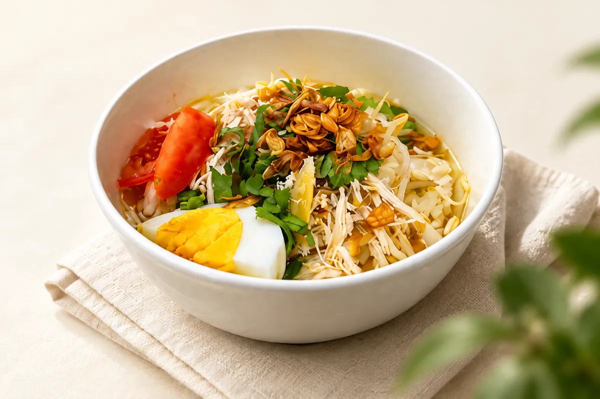

Soto Ayam Mbah Poetri
Soto ayam dengan kuah gurih, ayam suwir, dan racikan rempah khas.
Rp 22.000✣ SOTO AYAM KHAS
Soto ayam, rasa rumahan, dan kehangatan
untuk semangkuk kebahagiaan setiap hari.

✣ TENTANG KAMI
Soto Mbah Poetri hadir untuk menemani waktu makan dengan rasa rumahan yang hangat dan menyenangkan. Duduk sejenak, nikmati semangkuk soto, dan bagikan cerita bersama orang terdekat.
Kami percaya kehangatan juga hadir dari hal sederhana: hidangan yang akrab dan waktu yang dinikmati bersama.
Rasa rumahan untuk dinikmati bersama.
Teman untuk jeda di tengah hari.
Duduk bersama, berbagi cerita.
✣ KATA MEREKA
Contoh tampilan ulasan,
bukan testimoni pelanggan asli.
“Sotonya enak banget, kuahnya gurih dan terasa rempahnya.”
Contoh ulasan
Belum dipublikasikan sebagai ulasan asli
“Rasa rumahan yang selalu bikin kangen.”
Contoh ulasan
Belum dipublikasikan sebagai ulasan asli
“Pelayanan ramah, tempat bersih, recommended!”
Contoh ulasan
Belum dipublikasikan sebagai ulasan asli
✣ KUNJUNGI KAMI
Alamat akan segera diumumkan.
Jam buka akan segera diumumkan.
Kontak akan segera tersedia.
Lokasi akan tampil setelah
alamat restoran dikonfirmasi.